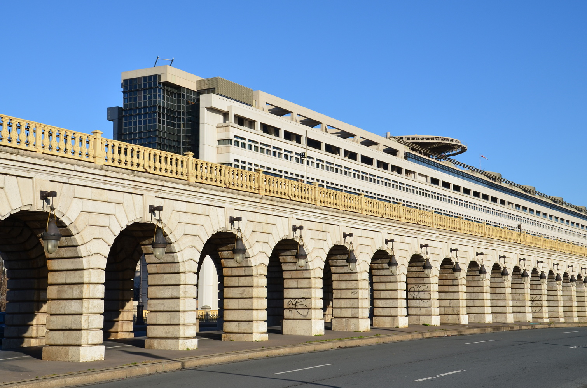
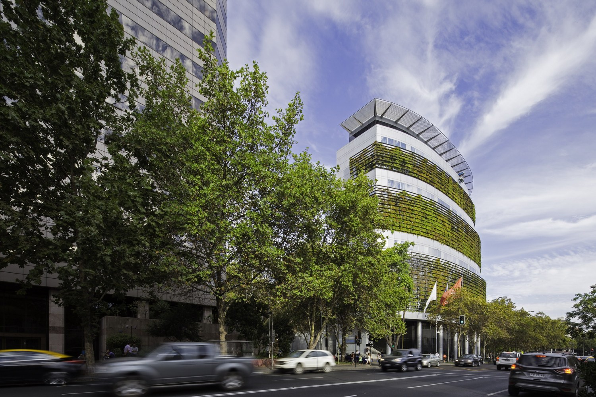
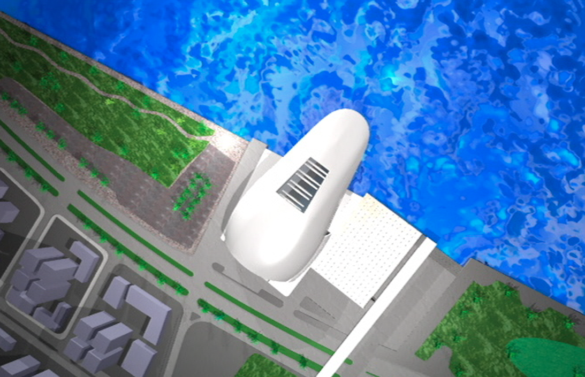
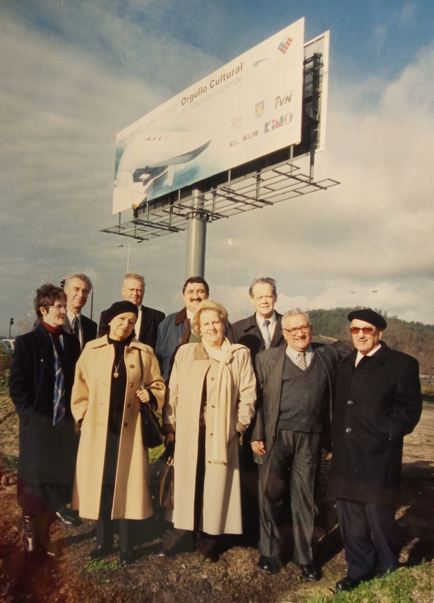

La primera tarea a solucionar para esta incipiente organización de ciudadanos fue dónde construir el nuevo teatro. King ya había investigado algo al respecto y lo había escrito en una carta al diario El Sur el 11 de julio de 1994 en la que se exlicaba que la Universidad de Concepción era dueña del Teatro Concepción antiguo, porque la Sociedad Teatro Concepción S.A. se lo había transferido por escritura llamada ‘de compraventa’ del año 1929, que en verdad era una donación, pues el precio era simbólico.
Incluso, contemplaba en la cláusula tercera que, si la universidad dejaba de existir o perdía su carácter de institución particular o local, el teatro pasaría al Club Concepción. Entendía que, aunque la universidad no había perdido su condición de regional o privada, tenía una obligación moral de hacer que el terreno donde estaba el teatro destruido siguiera usándose para el fin que se le había destinado.
"Ya como presidente de la nueva corporación -agrega King- tuve la oportunidad de conversar con Augusto Parra Muñoz, rector de la Universidad de Concepción, con quien habíamos sido compañeros y amigos en la Escuela de Derecho de esa casa de estudios. Él era algo menor que yo, pero hermano de uno de mis mejores amigos de la época de estudiante, Pedro León.

Antiguo Teatro Concepción Barros Arana esquina Orompello.

Antiguo Teatro Concepción con público.
Augusto Parra.
El rector Parra se manifestó completamente de acuerdo con la idea de construir un nuevo teatro y que apoyaría en lo que fuese posible. Desgraciadamente, existen esos “peros” obstaculizadores y la universidad necesitaba financiamiento. El producto de la venta de ese inmueble les ayudaría mucho y, por si fuese poco, tenían conversaciones para su venta por un buen precio. En todo caso, hubo apoyo de la UdeC con un aporte económico que nos ayudaría a pagar gastos administrativos y con el comodato de una oficina, ubicada en calle Aníbal Pinto 355, tercer piso. Sin embargo, encontrar el inmueble donde construir el edificio se estaba haciendo difícil. Una esperanza desaparecía."
En su siguiente paso, más protocolar, los directores visitaron al Intendente Regional, Martin Zilic Hrepic: "Han pasado los años y no recuerdo bien quiénes estuvimos en esa reunión con el intendente -recuerda King-. Creo que fuimos con Carlos Von Plessing, Tito Ansaldo y Richard Henríquez. Él estaba empeñado en lograr que la ciudad no le diera la espalda a su río Bío Bío y llegara, verdaderamente, hasta las orillas de él." Para esto, se estaba diseñando un nuevo proyecto, el Programa de Recuperación Urbana Ribera Norte, para cambiar ese lugar totalmente perdido e irregular, con casas precarias e inseguras para sus habitantes.
Martin Zilic.
Zilic ya estaba en conocimiento de los afanes de la incipiente corporación y, sin que ellos lo imaginasen, les propuso construir el teatro a la orilla del río Bío Bío, cediendo un terreno sin costo. De nuevo, nacía una esperanza cuando las cosas parecían imposibles.
Luego de la proposición del Intendente Martin Zilic, se reunieron los arquitectos Antonio Celis, Bernardo Trumper, Werner Stehr y Enrique Amstrong. Creyendo que la remodelación de la Costanera de la Ribera Norte sería una realidad, aceptaron el lugar como el mejor posible. Llevaron la propuesta al directorio y las opiniones estuvieron bien divididas, desde insistir con la Universidad de Concepción a buscar un terreno entre las comunas de Concepción, Talcahuano y Hualpén. La principal objeción a la idea de Zilic era la supuesta imposibilidad de mudar a cientos de familias que se habían instalado en la orilla del río y, si se lograba, pasarían muchos años para eso. King confiesa que "guardamos bajo 7 llaves las observaciones pesimistas de algunos directores". Hoy podemos ver el resultado: desde la distancia temporal, tantos años después, cabe decir: Gracias, Intendente Zilic.

Terreno destinado para el Teatro Pencopolitano en el proyecto Ribera Norte de Concepción.
ARQUITECTURA PARA EL TEATRO
Luego, quise saber más detalles de cómo en este listado de hechos, algunos increíbles, se había incorporado el diseño del afamado arquitecto chileno Borja Huidobro, quien ni siquiera vivía en el país, sino en Francia. Y en qué se habían basado para determinar los requisitos técnicos que incluían 2 salas.
“A estas alturas -me responidió King- cabe señalar que sí estábamos conscientes que sin un proyecto, incluso, un boceto de cómo podría ser el teatro, sería difícil entusiasmar a la opinión pública. Y había que mantener el entusiasmo producido con la presentación de Pavarotti."

Bernardo Trumper, Eugenio Dittborn y Luis Alberto Heiremans en el Aeropuerto Los Cerrillos, 1964.
Organisation Internationale des Scénographes, Techniciens et Architectes de Théâtre (OISTAT).
Por otra de las tantas casualidades, se pusieron en contacto con Bernardo Trumper. Él era un arquitecto chileno que se había especializado en escenografía en la Universidad de Yale. Incluso, tuvo el cargo de vicepresidente de la de l' Organisation Internationale des Scénographes, Techniciens et Architectes de Théâtre (OISTAT), organización mundial afiliada a la UNESCO, destinada a promover la formación, el intercambio de ideas e innovaciones y la colaboración entre los profesionales de las artes espaciales y visuales del teatro. En 1991, fundó el Centro Chileno de Escenógrafos, Arquitectos y Técnicos Teatrales de Chile, dependiente de la OISTAT.
Trumper estaba en Chile por una enfermedad que le impedía seguir con su trabajo en Europa. Se entusiasmó con la idea de estudiar las características técnicas que debería tener un nuevo teatro en una ciudad como Concepción. Les dijo: “No puede ser un edificio más. Debe ser un acontecimiento arquitectónico excepcional que exprese la clara decisión de darle a las artes de la representación una nueva dimensión, conforme a los objetivos artísticos que se pretenden para la ciudad”.
Su trabajo sirvió para todo lo posterior. Trumper explicó que lo ideal sería tener tres salas: una para conciertos sinfónicos, otra para presentaciones de ópera, ballet, musicales, etc.; y una tercera para obras de teatro y presentaciones similares. Coincidieron con él que dos salas sería más factible para la realidad penquista. Entonces, explicó cuáles eran las condiciones acústicas, entre otras medidas técnicas, para que la gran sala tuviera múltiples aplicaciones. Pensaba que 800 butacas eran lo apropiado y sobre eso tuvieron una larga conversación. Le explicaron que en Concepción, las obras artísticas de gran envergadura por lo general eran foráneas y, por lo tanto, era imposible mantenerlas en cartelera más de dos o tres días, por los costos asociados en hospedaje, traslados, alimentación, etc. Además, considerando que aumentar en 400 asientos sería un costo marginal dentro del gasto total de la construcción del teatro, estuvo de acuerdo que las mil doscientas butacas serían una mejor opción. Tristemente, Bernardo Trumper falleció sin ver el boceto propuesto después por Borja Huidobro.
Planos del boceto propuesto por Borja Huidobro para el Teatro Pencopolitano.
“A riesgo de ser majadero, repitiendo y repitiendo a quienes lean tu libro -me insistía Juan Eduardo- con Borja de nuevo ocurrió lo inimaginable, algo que ni siquiera estábamos buscando. Eran las once y media de la mañana, cuando mi secretaria me pasó una llamada del rector Augusto Parra. Me propuso que almorzáramos ese día, porque tenía un tema urgente que tratar, una sorpresa. Puntualmente, a las 13.45 horas, nos juntamos en el Club Concepción. Augusto iba acompañado de un hombre más o menos de mi edad y me lo presentó. Era Borja Huidobro. Había oído hablar de él y algo había leído sobre un edificio especial, construido en Santiago que había merecido muchos elogios y premios."
Resultó que Borja había hecho un proyecto de arquitectura para un museo de ciencias que iba a ubicarse en el Barrio Universitario, detrás de la Laguna de Los Patos de la Universidad de Concepción y Augusto Parra consideraba que era la persona más calificada para abordar el proyecto del nuevo teatro. Sabía y le interesaba esta iniciativa, porque no había hecho nada en Chile en el ámbito cultural. Fue una reunión agradable, según King. Al término del almuerzo, estuvo dispuesto a acompañarlo al terreno donde se emplazaría el edificio. Dejó el auto pasada la línea férrea y, luego caminaron hacia la orilla del río. Hoy, nadie se podría imaginar lo que era ese lugar.
“Había una especie de neblina alta -me describiría Juan Eduardo King- casi una lluvia, pero muy suave, que no mojaba mayormente, pero hacía resbaladizos los callejones de tierra." Llegaron a orillas del río. Borja se detuvo y miró a lontananza, hacia los puentes. Estaba en silencio. King pensaba que haberlo llevado a ese lugar podría ser en vano. Tal era el abandono que, en la playa del río, aguas abajo, divisó un perro muerto. Sin embargo, al arquitecto el entorno desastroso no le importó. Después de un momento, le dijo: “Es el mejor lugar posible. Aquí, junto a este río que fue frontera entre bandos de españoles y mapuches, haría un teatro que simulara un casco español abandonado. Me parece un desafío interesante en el que los acompañaría, encantado”.

Ribera Norte de Concepción antes de La Costanera actual.
De regreso, en un café del centro, el arquitecto hizo un croquis de lo que ya había imaginado en una servilleta. Ese papel, King asegura que lo guardó, pero lo hizo tan bien que no recuerda dónde está. Quizás aparezca alguna vez, abriendo un libro de su biblioteca.
BORJA HUIDOBRO EN LA CASA DEL ARTE
Ministerio de Economía y Finanzas de Francia, Borja Huidobro y Paul Chemetov.
Ministerio de Economía y Finanzas de Francia, Borja Huidobro y Paul Chemetov.
 en París, Francia.")
Restauración de la Gallerie de L'Evolution (1994) en París, Francia.

Facultad de Ciencias Físicas y Matemáticas U. de Chile, Borja Huidobro y A4 Arquitectos
Edificio Consorcio Santiago, Enrique Browne y Borja Huidobro.
Borja Huidobro es chileno, radicado en París desde 1962. Se consagró a principios en la década de los ochenta al diseñar, junto a Paul Chemetov, la Embajada de Francia en India y el Ministerio de Finanzas, una de las obras de mayor envergadura de esa época en Europa. También estuvo detrás de la Biblioteca Regional de Montpellier, del Monumento a Charles de Gaulle en Paris y la restauración de la Gallerie de L'Evolution en el Museo de Historia Natural de París. Mientras, en Chile tiene obras emblemáticas como el edificio Consorcio Nacional de Seguros en El Bosque; Banmédica en Las Condes y los Juzgados del Crimen. En 1989, fue nombrado Caballero de la Orden de la Legión de Honor y Oficial de Artes y Letras, por el presidente francés François Mitterrand. También recibió la medalla de plata de la Académie d'Architecture de París y el Premio Gabriela Mistral del Ministerio de Educación de Chile. Su destacada trayectoria le hizo merecedor del Premio Nacional de Arquitectura en 1991.
Si no hubiese sido por las circunstancias de su trabajo en la Universidad de Concepción, quizás la Corporación Teatro Pencopolitano nunca habría tenido la posibilidad de llegar a él. Con Borja Huidobro ya nada los detuvo. Primero, Pavarotti; luego, Borja. Con su colaboración, fallar en la mega tarea era más improbable. No hablaron de honorarios, tácitamente lo dejaron para más adelante. No estaba claro tampoco el tiempo que demorarían en conseguir el financiamiento para el proyecto. Y, al parecer, para Borja Huidobro el desafío de diseñar un edificio que podría convertirse en lo más atractivo de la ciudad, parecía ser lo que más le motivaba. "Para nosotros, el Directorio -dice Juan Eduardo King- era algo que no habíamos podido imaginar. Que un arquitecto chileno de fama mundial, se comprometiera con nuestro proyecto, era algo increíble, nunca soñado. En un viaje a París, fui al edificio de Economía y ver en terreno, la importancia arquitectónica que se le asignaba. Y la verdad, como siempre ocurre, la realidad superó a lo imaginado. Ni en fotografías, ni videos se podría apreciar lo impresionante de su diseño. Es el único en la ciudad que se le permitió entrar en el río Sena."
El prestigio indiscutido del arquitecto les permitiría trabajar con él sin hacer, como en otras circunstancias sería lo usual, un concurso de arquitectura que de por sí sería mucho dinero, quizás unos trescientos mil dólares de la época, que tampoco tenían. Así, el proyecto siguió avanzando.
No pasó mucho tiempo para tener noticias concretas de su avance. Su socio, el arquitecto Roberto Benavente, les entregó planos y un boceto de lo que sería el anteproyecto. Se reunieron en la oficina de la corporación que en aquella época estaba en la calle Aníbal Pinto, entre O´Higgins y San Martín, para conocer los planos del exterior del recinto con cortes de cada uno de sus pisos. A todos les sorprendió, ya que estaba muy fuera de lo que se acostumbraba a ver como teatro. Pero reconocieron de inmediato que, siendo algo muy diferente, sería hermoso e impactante.

Roberto Benavente, arquitecto.
Dirigía la reunión el encargado del tema "Proyecto Teatro", Antonio Celis, quien hacía las preguntas del caso. También como arquitectos intervenían Werner Stehr y Enrique Amstrong, sin perjuicio de las preguntas que podían hacer el resto de los presentes. El Directorio aceptó lo hecho y dio su venia para seguir con este diseño.
Carlos Guzmán Jara, ingeniero civil y socio; Juan Eduardo King, presidente de la Corporación Teatro Pencopolitano, y Roberto Benavente, arquitecto, durante el estudio de suelos, realizado en el terreno en la Costanera, en agosto de 2002 como donación de la empresa de Guzmán.
 Directores de la corporación inauguran el letrero en el terreno del teatro en la costanera: Annemarie Maack, Alicia Estrada, Mercedes Pujol, Alejandro Witker, Carlos Martínez, Juan Eduardo King, Adriano Cecioni, Marcelo Contreras y Eduardo Meissner.
En su gestión, la corporación siempre buscaba el apoyo diverso de quienes pudiesen ayudar en la concreción del teatro. Con este propósito, un par de meses después de la reunión con Benavente, un encuentro en particular tendría un efecto futuro que nadie imaginó en su momento. Aprovechando que el senador Sebastián Piñera estaba en Concepción, lo invitaron a su sede para conocer el proyecto, buscando la asesoría y recursos de su fundación. Juan Eduardo King cuenta que "lo pasé a buscar al Hotel El Dorado para dirigirnos, caminando, a la oficina de nuestra corporación, aprovechando el momento para conversar algo más del proyecto. En ella, nos esperaban algunos directores, liderados por Antonio Celis quien, como correspondía, fue el encargado de mostrar y explicar los planos, que tenía colgados en una pared. Antonio comenzó explicando desde el exterior, de cómo se internaba en el río, que su techo tendría una iluminación por el sistema patentado por Roberto Benavente y lo de las salas. Lo hacía de pie, indicando los lugares de los planos con un puntero."
Yo ya me había integrado como gerente de la corporación y fui testigo presencial de este acontecimiento que, en su momento, tendría alcances históricos. Mientras el arquitecto explicaba, Sebastián Piñera estaba preocupado de mil cosas, parecía prestarle poca atención al relato del presentador. Incluso, me pidió el diario del día y lo tenía encima de la mesa, hojeándolo a ratos, si no estaba mirando algún mensaje de su celular. Yo inquieta, rogaba que el directorio no se diera cuenta de la no atención que aparentemente le ponía a su público unipersonal.
Luego, para mi sorpresa, el que creía que no estaba atento, el de los pensamientos en muchas cosas, hizo un resumen perfecto de todo lo explicado por Antonio Celis. Lo encontró excelente y nos ofreció la ayuda de la Fundación Futuro si lo necesitábamos. Este encuentro con el Senador Piñera fue de una importancia no imaginada. Quizás sin esa reunión informal y la exposición de Antonio Celis al senador Piñera, el teatro no existiría.
El 23 de agosto de 1997, en La Casa del Arte de la Universidad de Concepción, el propio Borja Huidobro hizo una presentación de su proyecto ante autoridades de la Región; socios y directores de la Corporación Teatro Pencopolitano, arquitectos, estudiantes de arquitectura y muchas personas ya interesadas en el proyecto del teatro que habría de cambiar el alma colectiva del Gran Concepción y de la Región. Entre los presentes, podemos nombrar al Intendente Martin Zilic; el senador Eugenio Cantuarias; Ariel Ulloa, alcalde de Concepción; Roberto Goycoolea, rector de la Universidad del Biobío; Augusto Parra, rector de la Universidad de Concepción. También, desde luego, estaban todos los medios de comunicación.
Borja Huidobro, arquitecto.
Borja presentó los planos y la maqueta hecha al efecto. Cabe decir, que los arquitectos Huidobro y Benavente nunca cobraron nada por su proyecto, incluso ellos mismos financiaron sus viajes a Concepción. Lo único que se les pagó, fue la maqueta hecha en Francia, para lo cual la Ilustre Municipalidad de Concepción aportó los fondos. Los asistentes, sin excepción, aceptaron entusiasmados lo propuesto para el futuro teatro. Borja fue muy aplaudido. Y muchos hicieron comentarios aprobatorios. Desde ese momento, el proyecto tomó vuelo. Los socios aumentaron, superaron los dos mil quinientos, la mitad estudiantes. Ya nada evitaría construir un teatro para Concepción.